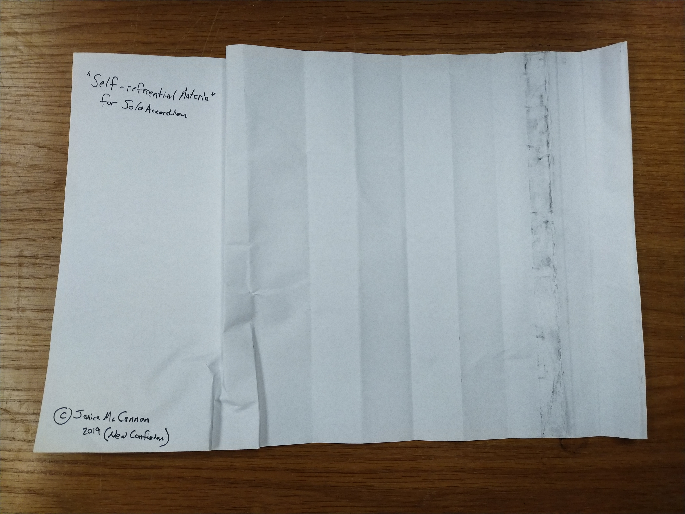

Study in Superposition
Anton Miller
<a href="http://editionauflage.bandcamp.com/track/study-in-superposition">Study in Superposition by Anton Miller</a>
Winter Risers
Kate Winters
<a href="http://editionauflage.bandcamp.com/album/winter-risers">Winter Risers by Kate Winters</a>
Saturation Suite
Brian Bates
Self-referential Material
Jannice Mcannon
